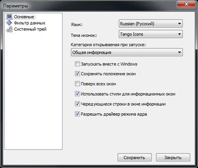
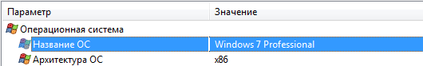

|
Aspia має ряд параметрів, які можна змінити перейшовши в діалог налаштувань (мал. 1).

Мал. 1
У лівій частині діалогу розташований список категорій параметрів, який складається з:
- Основних параметрів
- Фільтру даних
- Параметрів системного трею
При натисненні кнопки «Зберегти» параметри програми будуть збережені і вікно буде закрите. При натисненні кнопки «Закрити» вікно
буде закрите без збереження параметрів.
Основні параметри
В категорії «Основні» (мал. 1) користувач може змінити мову програми,
використовувану тему значків, категорію, яка буде відображатись при запуску програми, а також ряд наступних параметрів:
- Запускати разом з Windows - параметр визначає чи буде Aspia автоматично запускатись при ввімкненні Windows.
- Зберігати положення вікон - чи буде зберігатись положення вікон. Впливає на головне вікно програми і діалог збереження звіту. У головному
вікні програми при знятті цього прапорця не будуть зберігатись розміри колонок і положення роздільника між деревом категорій і відкритою
категорією.
- Поверх всіх вікон - чи буде програма відображатись поверх всіх вікон.
- Використовувати стилі для інформаційних вікон - при наявності прапорця будуть використовуватися стилі оформлення (мал. 2), а при відсутності -
відповідно не будуть (мал. 3).

Мал. 2

Мал. 3
- Чергування рядків в вікні інформації - при відображенні інформації будуть використовуватися почергово темні і світлі рядки,
що має поліпшити сприйняття. Якщо прапорець не встановлений, то всі рядки матимуть біле тло.
- Дозволити драйвер режиму ядра - ввімкнення чи вимкнення драйвера Aspia, який використовується для отримання даних SPD, DMI (SMBIOS)
і інформації з датчиків.
При вимкненні драйвера частина функцій програми стане недоступна.
Фільтр данихНалаштування в цій категорії (мал. 4) дозволяють вибрати найбільш важливі дані
при виведенні інформації і навпаки - відсіяти ті, які користувачеві не потрібні.

Мал. 4
В даний час фільтрація даних доступна для категорій «Системні події» і «Історія IE». Параметри в даних
налаштуваннях впливають і на виведення інформації у вікні програми, і при збереженні звіту.
Системний трейНалаштування в категорії «Системний трей» (мал. 5) впливають на значки, які будуть
відображені програмою в треї.

Мал. 5
- Запускати згорнутою в трей - при запуску програми вона відразу ж буде згорнута в системний трей.
При цьому її можна в будь-який момент відновити натиснувши на значок в треї лівою кнопкою миші. Якщо при встановленому прапорці «Запускати
згорнутою в трей» буде також встановлений прапорець «Показувати значок програми», то значок програми буде відображатися при згорнутому і
розгорнутому головному вікні. Якщо прапорець «Показувати значок програми» не буде встановлений, то при відновленні вікна значок буде видалятись
из трею.
- Показувати значок програми - при встановленні цього прапорця значок Aspia завжди буде відображатися в системному треї
(якщо програма запущена).
- Показувати значки датчиків - параметр вмикає відображення значків датчиків в системному треї, які дозволені в списку нижче.
- Частота оновлення - числове значення, яке дозволяє вказати величину інтервалу (в секундах), з яким буде
відбуватися оновлення показань на значках датчиків в системному треї.
- Значки процесорів та значки жорстких дисків - кнопки в цих областях дозволяють налаштувати колір тла і колір шрифту для значків
процесорів і жорстких дисків. При натисканні цих кнопок виводиться стандартний діалог вибору кольору.
|